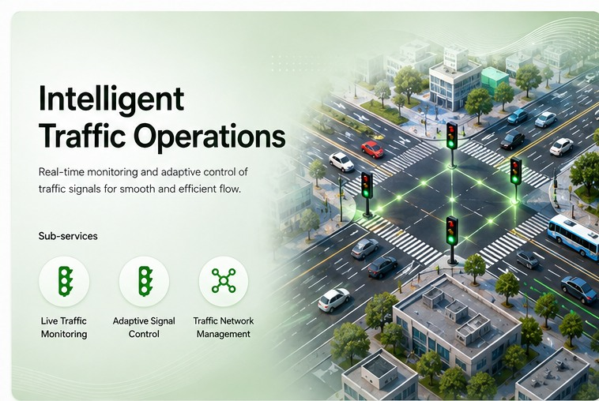
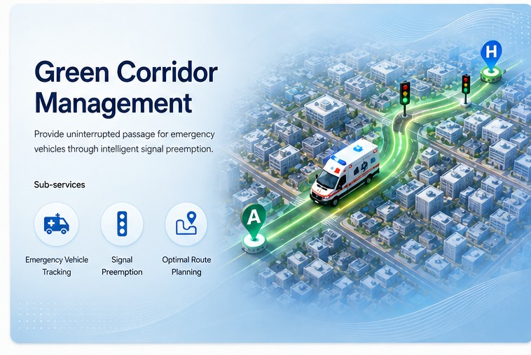

View moduleAdaptive signal controlMax-pressure control
Module 01 Traffic infrastructure that notices an incident on its own, puts a human on the confirmation, sends the unit that is genuinely closest, and clears a rolling green ahead of it — then hands every junction back to adaptive control.
Every module publishes and consumes the same versioned events, so the core never learns whether it is optimising a simulation or a city.

View module View module
View module

View module View module
View module
Automated dispatch on inferred human behaviour is not defensible in an audit or in public. So vision may confirm a stopped vehicle on its own — and never a person.
Not a feature list. Each one exists because a specific failure mode would otherwise reach the street.
The stack
Measured in the pilot zone from the injected incident. Verification is deliberately human, and deliberately the slowest step.
A stopped vehicle holds a live lane past threshold. Vision raises a candidate with a confidence and a clip reference while segment speed is already collapsing independently.
anomaly.candidateFusion itself takes about two seconds. The rest is the operator, who sees the frame, the evidence breakdown and the score, then confirms — or rejects, which becomes a training label.
incident.detectedAn air-distance shortlist, then a live-weighted shortest path per candidate unit. Lowest real drive time wins, and the route carries a per-junction ETA.
route.calculatedWindows open 15 s before predicted arrival, so the first junction is held around thirty seconds in. The unit passes and the junction returns to the optimizer.
signal.override.started / endedThe pilot is not a throwaway prototype. It is the same architecture with service boundaries collapsed into module boundaries, so extraction later is mechanical rather than a redesign.
Zones are the scaling axis. A new district is new partitions and new pods, not a new design.
One machine, three processes, a 20-junction zone driven by SUMO. Everything an operator touches is real; only the street is simulated.
The same contracts unfolded onto real infrastructure, with the adapters swapped and nothing in the core touched.
The operator console runs the whole pilot zone in your browser — adaptive control, the verification queue, live routing, the reservation ledger and the fault-injection panel.